6 Training instances
Your landing page now introduces your training as a whole. The next step is to add the times your training is actually given, each with its own website and training materials. These are the training instances, which learners reach from the landing page.
In this chapter, you will learn how to:
- Define a training instance, also for self-paced training and training in cohorts.
- Create your first new training instance: make a new branch, and publish its website.
- Add an instance to the landing page: list it in the All training instances banner, and link it in the hero buttons.
- Create additional training instances, the next time your training is given.
- Create a branch for the training instance: this creates its website.
- Add it to the landing page, in
data/instances.ymlon the main branch: this makes the website findable.
How to switch off template mode and fill in the website of a training instance (its dates, schedule, team and materials) is explained in the next chapters, Instance pages - Data files and Instance pages - Content.
Before you start
In this chapter, you work on two branches: the new release- branch, and main for the landing page.
Commit and push your changes before you switch to another branch. Changes you haven’t committed yet move along with you to the other branch, where you might commit them by mistake.
6.1 What is a training instance?
A training instance is one time your training is given, for example in May 2027. Each training instance has its own branch in your repository, and its own website, with its own dates, schedule, team and materials. The landing page links to them in two places:
- the current training instance, in the hero;
- all training instances, in the All training instances banner.
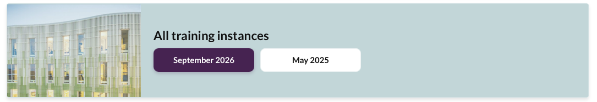
Is your training self-paced, or given to several cohorts? The template works for those too: open the matching box below.
In self-paced training, participants start whenever they like, so there is no “time the training is given”. Instead, think of a training instance as a version of your materials:
- Create a new training instance when you update the materials substantially, for example a new module or a revised structure. Small fixes, such as typos, go into the current training instance.
- Earlier versions stay online. Participants who started with an earlier version can finish with the materials they began with.
If your training runs in cohorts, groups of participants who follow the same training at different times, how you set up your training instances depends on how your training is organised: does each cohort need its own website, or do the cohorts share one?
Option 1: one training instance per cohort
- When: each cohort has its own dates, schedule, team or announcements.
- What it represents: one cohort, with its own website. Each new cohort starts from the previous one, as described in Create additional training instances.
Option 2: one training instance for several cohorts
- When: the cohorts follow the same materials and website, and only their start dates differ.
- What it represents: a version of your materials. List the cohorts and their dates on the website, for example in the announcements or practicalities (see Instance pages - Data files). Create a new training instance only when the materials change substantially.
6.2 Create your first new training instance
Choose a name
Each training instance branch is named release- followed by the year and month in which the training instance is given, written as YYMM (see Branches). For example:
| Training instance | Branch name |
|---|---|
| May 2027 | release-2705 |
| November 2027 | release-2711 |
The four digits also become the address of its website, for example https://ORGANISATION.github.io/REPOSITORY-NAME/2705/.
For self-paced training and training in cohorts (see What is a training instance?), use these year and month:
| Your training | Year and month | Example |
|---|---|---|
| Self-paced | When the version is released | release-2705 for a version released in May 2027 |
| One training instance per cohort | When the cohort starts | release-2702 for a cohort starting in February 2027, release-2709 for the next one in September |
| One training instance for several cohorts | When the materials are released | release-2702 for materials released in February 2027 |
Each branch name must be unique. So with one training instance per cohort, two cohorts can’t start in the same month.
Switch branch
Once you have chosen a name, you can begin creating your new training instance, on a new repository branch. A new branch is always created as a copy of an existing one, so you first have to switch to the branch you want to create a copy of.
For your first training instance: switch to release-0000, the example training instance that comes with the template.
To switch branch in VS Code:
Click the branch name in the bottom-left corner of VS Code.
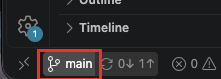
In the list that opens at the top, click on the branch you want to switch to, here release-0000. Branches that are only on GitHub but not VS Code so far start with origin/: if you choose those they will be added on your computer.
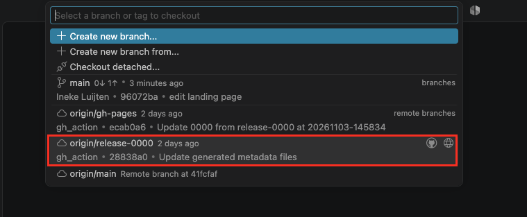
The files in the Explorer panel change to the files of that branch, and the bottom-left corner shows its name.
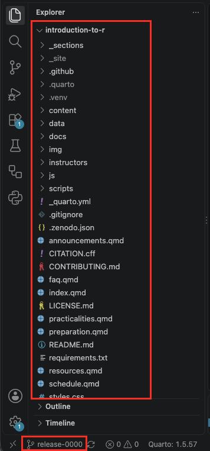
Create the branch
- Check that the bottom-left corner shows the branch you want to copy.
- Click the branch name (release-0000), and choose Create new branch… in the list that opens at the top.
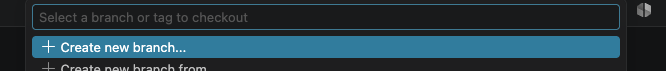
- Type the name of the new branch, for example
release-2706, and press Enter.
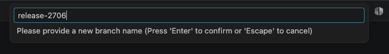
- Open the Source Control panel and click Publish Branch. This puts the new branch on GitHub.
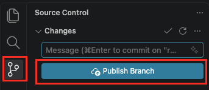
6.3 Add an instance to the landing page
You’ve now created a branch, and with it the website of your new training instance. Visitors can’t find that website yet: the landing page doesn’t link to it. To add the landing page links, you edit data/instances.yml on the main branch. The landing page then links to your new training instance in two places:
- the Take me to the current instance button in the hero;
- the All training instances banner.
To add your first training instance to the landing page:
Make sure you’ve committed any changes you made on your new training instance branch, and switch to the main branch, as described in Switch branch.
Open
data/instances.yml. It lists the training instances the landing page links to: one entry per training instance, from- slug:tosort_key:. The comments at the top of the file explain each field.
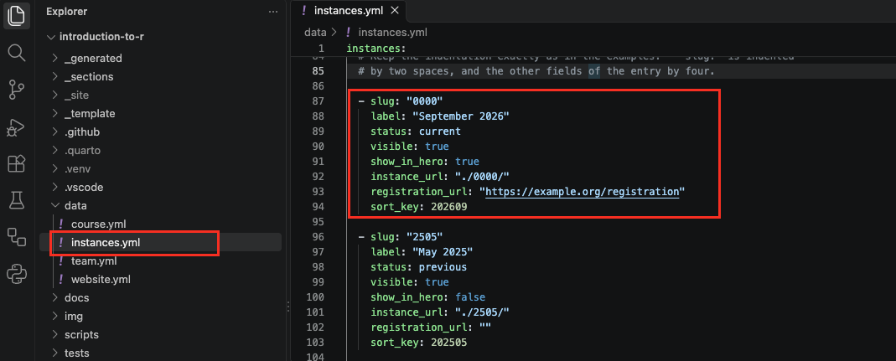
The list contains example training instances. Change the first one, with
slug: "0000", into your own training instance: change itsslug,label,instance_urlandsort_key. If registration is open, add the link to the registration page or form underregistration_url. Without registration, keepregistration_url: ""and the registration button will disappear.For example, for a June 2027 training instance with no registration:
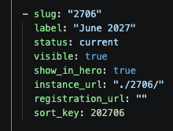
Delete the other examples, 2505 and 2411: each whole entry, from
- slug:tosort_key:. They are only there to show how the list works in the template, and link to websites that don’t exist in your repository.Save the file, and check the preview: the hero button and the All training instances banner now show your training instance.
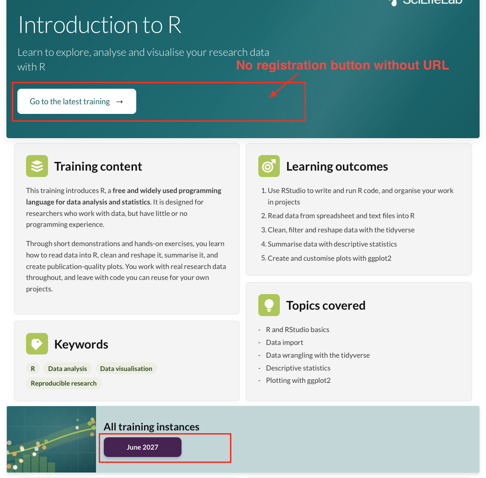
Commit and push your changes.
If you break one of the rules described in the file, the preview shows an error that explains what to fix.
Once your own training instance exists, you no longer need the example release-0000 branch. You can keep it, to look up how something was set up in the template, or delete it:
Delete the branch: on your repository’s main page on GitHub, click Branches.
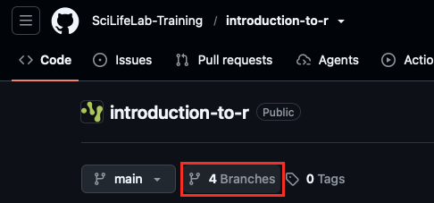
Click the bin icon next to release-0000.
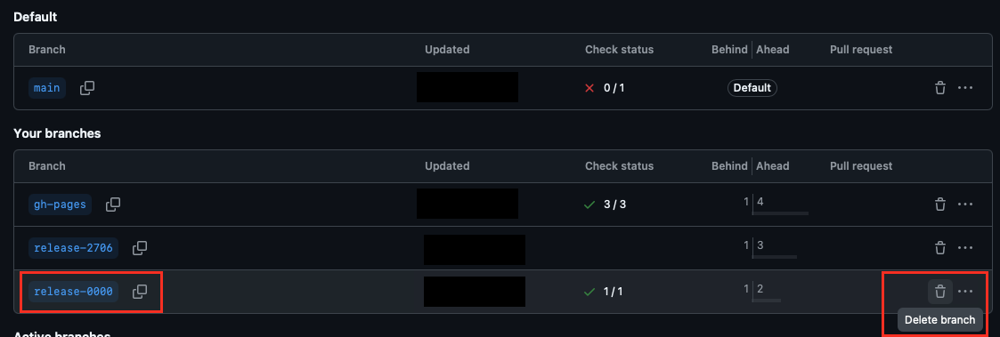
Delete its website: on the gh-pages branch on GitHub, open the
0000folder, click ⋯ at the top right, and choose Delete directory.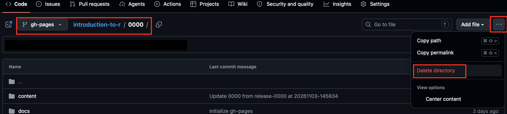
Only delete it when your own first training instance is ready. Your later training instances start from your own previous one, so you don’t need release-0000 for those. But once deleted, it’s gone!
6.4 Create additional training instances
The next time your training is given, start from your previous training instance rather than from release-0000. That way, everything you prepared last time comes along: your materials, instructor notes, team and settings. The previous training instance keeps its own branch and website, so participants can always go back to the materials as they were.
Switch to your previous training instance branch, for example release-2706, and create a new branch from it, for example
release-2711, as described in Create your first new training instance.Update the information of the new training instance, such as its dates, schedule and team: see Instance pages - Data files.
Switch to the main branch, and open
data/instances.yml.Add the new training instance: copy the entry of the current one, paste it at the top of the list, and change
slug,label,instance_urlandsort_key. Add a registration URL if registration is open.Make the new training instance the current one. In the entry of the previous training instance, change
status: currenttostatus: previous, andshow_in_hero: truetoshow_in_hero: false.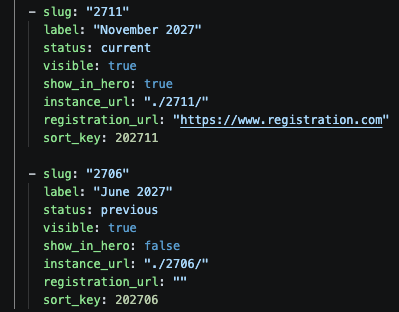
Save the file, check the preview, and commit and push.
The training instance with status: current is the one the ‘take me to the current instance’ hero button leads to. Every other instance in the list needs to have status: previous. For all instances that have status: previous, their websites automatically show a banner saying: This is an older instance of this training, with a link to the current one.
If your previous training instance was published on Zenodo, empty version_doi and release_date under reuse in data/course.yml of the new branch: they belong to the previous training instance. See FAIRification.
6.5 Cheat sheet
| To… | Where | What to do |
|---|---|---|
| Switch branch | VS Code, bottom-left corner | Click the branch name and choose a branch |
| Create a training instance | VS Code, bottom-left corner | Switch to the branch to copy (release-0000 the first time), click the branch name, choose Create new branch… and type release-YYMM |
| Publish the new branch on GitHub | VS Code, Source Control panel | Click Publish Branch |
| Add your first instance to the landing page | main branch, data/instances.yml |
Change the "0000" entry to your training instance, and delete the example instances |
| Delete the release-0000 branch (optional) | GitHub | Delete the release-0000 branch on the branches page, and the 0000 folder on the gh-pages branch |
| Create another training instance | VS Code, bottom-left corner | Create a new branch from your previous training instance, not from release-0000 |
| Add another instance to the landing page | main branch, data/instances.yml |
Copy the entry of the current training instance to the top, and change slug, label, instance_url and sort_key |
| Make a new instance the current one | main branch, data/instances.yml |
For the previous instance, set status: previous and show_in_hero: false |